一个名字的起点The Beginning of a NameDer Anfang eines Namens

C.H. WOLF 的历史根植于格拉苏蒂（Glashütte）。十九世纪中叶，这座萨克森小城逐渐形成以制表和精密机械为核心的制造体系。专业化的零部件生产、精密加工，以及 1878 年成立的德国制表学校，为后来闻名世界的格拉苏蒂制表奠定了基础。精确、可靠、结构清晰，也逐渐成为当地制造文化长期坚持的原则。
The history of C.H. WOLF is rooted in Glashütte. During the mid-19th century, this small Saxon town developed a distinctive culture of watchmaking and precision engineering. A growing network of specialised component makers and precision workshops, together with the German School of Watchmaking founded in 1878, laid the foundations for the reputation Glashütte watchmaking would later enjoy worldwide. Precision, reliability and clarity of construction became enduring principles of the region's manufacturing culture.
Die Geschichte von C.H. WOLF ist in Glashütte verwurzelt. Seit der Mitte des 19. Jahrhunderts entwickelte sich die kleine sächsische Stadt zu einem Zentrum des Uhrenbaus und der Feinmechanik. Spezialisierte Zulieferer und feinmechanische Werkstätten sowie die 1878 gegründete Deutsche Uhrmacherschule schufen die Grundlage für den späteren internationalen Ruf der Glashütter Uhrmacherei. Präzision, Zuverlässigkeit und konstruktive Klarheit prägten die Fertigungskultur des Ortes.
1868 年，24 岁的 Carl Heinrich Wolf 在 Feldstraße 2 建立“Thurmuhren-Fabrik und Mechanische Werkstatt C. H. Wolf”。工场制造塔钟、公共计时机构及精密机械部件，业务随后扩展至齿轮、蜗杆和传动系统。部分早期塔钟保存至今，使 C.H. WOLF 十九世纪的制造历史仍有实物可循。二十世纪前半叶，企业继续向精密机械领域发展；战后的工业重组，则结束了 C.H. WOLF 作为独立企业的第一段历史。
In 1868, at the age of 24, Carl Heinrich Wolf established the Thurmuhren-Fabrik und Mechanische Werkstatt C. H. Wolf at Feldstraße 2. The workshop produced tower clocks, public timekeeping mechanisms and precision mechanical components, later extending its expertise to gears, worm drives and transmission systems. A number of its early tower clocks survive to this day, providing tangible evidence of C.H. WOLF's 19th-century manufacturing history. During the first half of the 20th century, the company continued to develop its expertise in precision engineering. The industrial restructuring that followed the Second World War eventually brought the first chapter of C.H. WOLF as an independent enterprise to a close.
1868 gründete der 24-jährige Carl Heinrich Wolf in der Feldstraße 2 die Thurmuhren-Fabrik und Mechanische Werkstatt C. H. Wolf. Gefertigt wurden Turmuhren, öffentliche Zeitmessanlagen und feinmechanische Komponenten; später kamen unter anderem Zahnräder, Schneckengetriebe und weitere Antriebselemente hinzu. Einige der frühen Turmuhren sind bis heute erhalten und machen die Fertigungsgeschichte von C.H. WOLF im 19. Jahrhundert unmittelbar nachvollziehbar. In der ersten Hälfte des 20. Jahrhunderts verlagerte sich der Schwerpunkt zunehmend auf die Feinmechanik. Mit der Neuordnung der Glashütter Industrie nach dem Zweiten Weltkrieg endete schließlich das erste Kapitel von C.H. WOLF als eigenständiges Unternehmen.